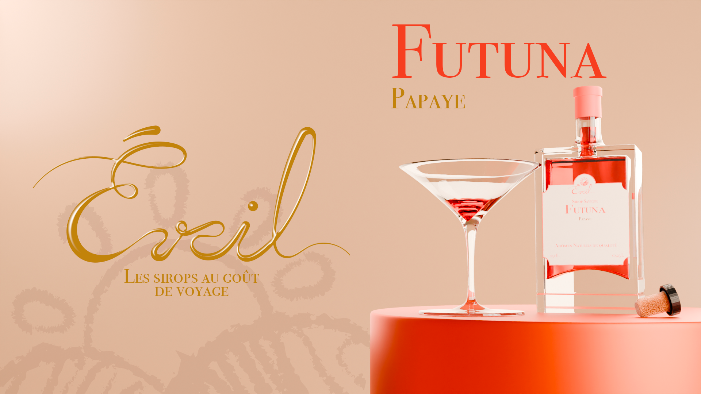
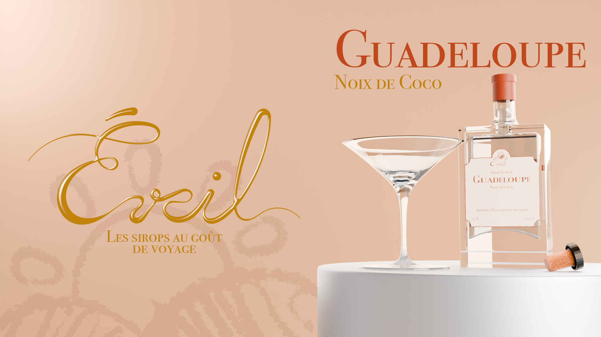
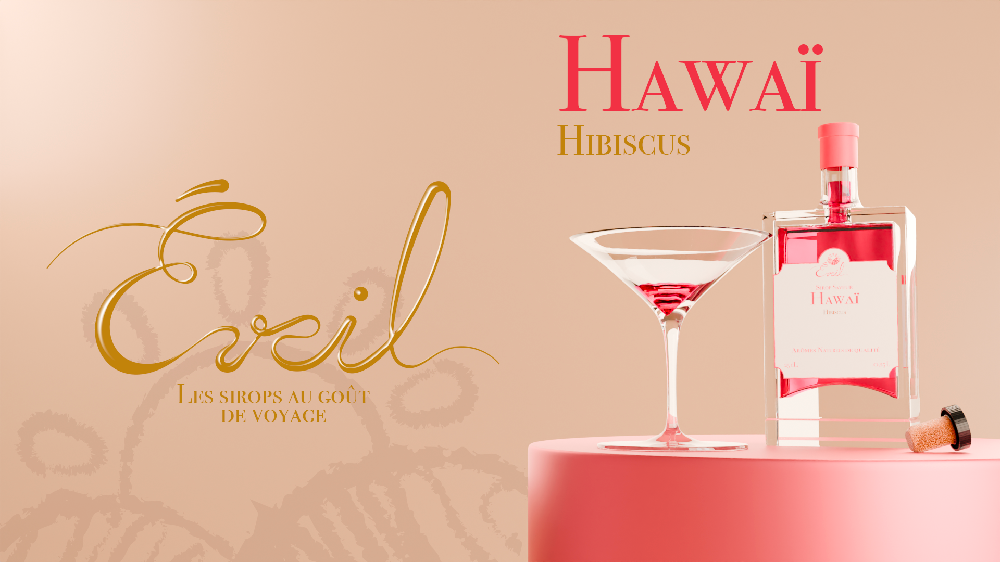
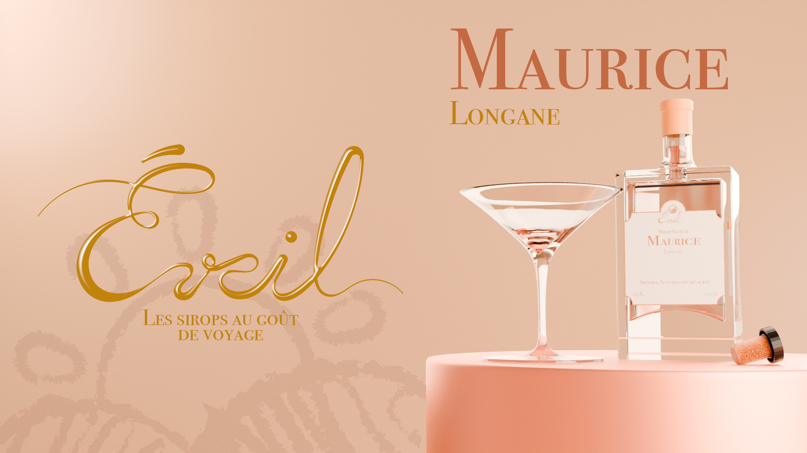
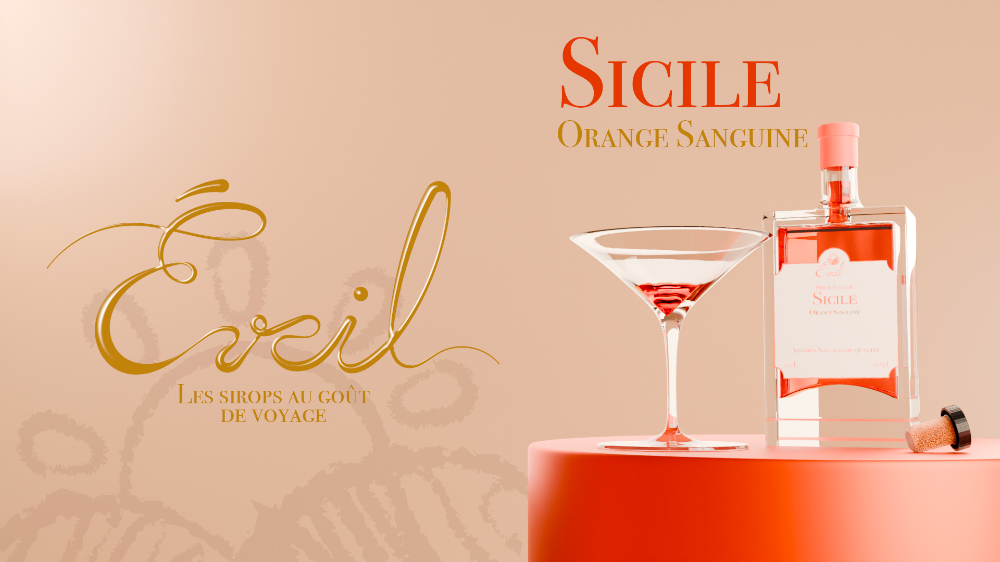
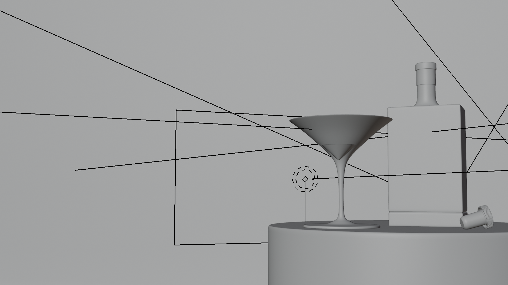
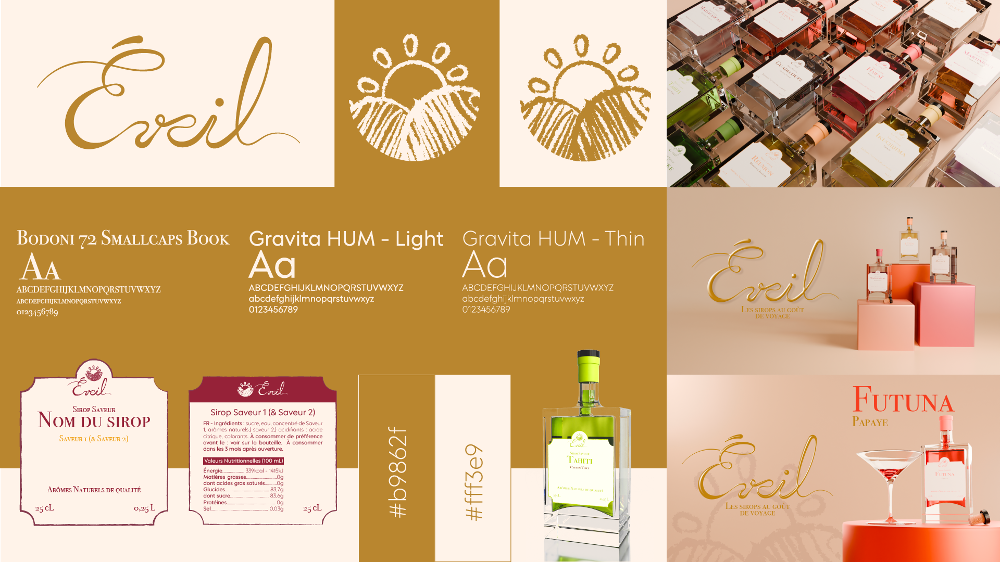

J’ai souhaité créer une marque fictive de sirops haut de gamme afin de démontrer à quel point un bon design peut transformer un produit a priori banal et accessible en un objet perçu comme raffiné et qualitatif.
J’ai souhaité créer une marque fictive de sirops haut de gamme afin de démontrer à quel point un bon design peut transformer un produit a priori banal et accessible en un objet perçu comme raffiné et qualitatif.










La marque fictive Éveil s’inspire de différentes îles
et de leurs fruits locaux pour proposer des saveurs puissantes
capables de faire voyager sans quitter son domicile. Douze parfums
pour douze voyages, de l’Atlantique au Pacifique, en passant
par l’Europe et l’Asie.


Ce projet a été l’occasion de mêler 3D, graphisme et
motion design, puisque j’ai dû tout créer de A à Z : identité visuelle,
charte graphique, logo, design des bouteilles,
packaging et étiquettes, mais aussi imaginer les saveurs
en me renseignant sur les fruits locaux pour rester cohérent et crédible.

L’ensemble du travail a permis de développer une direction artistique
élégante et cohérente, mettant en avant le caractère premium
de la marque. Un projet passionnant et complet, mêlant recherche,
conception et création visuelle.
